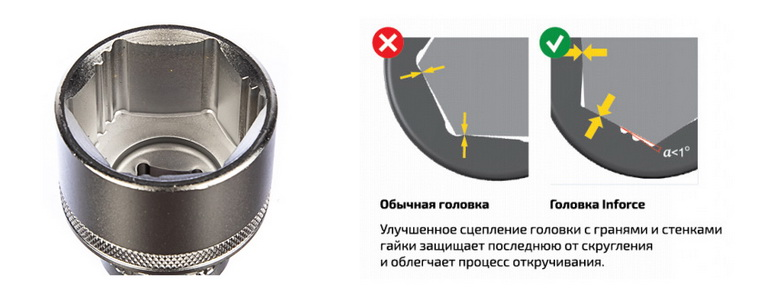
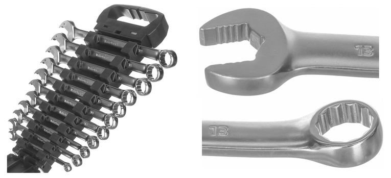

Не так давно появились инструменты, которые подходят для работы с крепежом, грани которого деформированы. А это значит, что торцевые головки и ключи способны захватывать практически круглые шляпки.
Торцевые головки нового поколения
Современные насадки имеют особый профиль. Они соприкасаются не с углами гаек и болтов, а с их гранями и стенками. Происходит равномерное распределение усилия по всей внешней площади элемента. Это позволяет откручивать крепеж со скругленными на 85% гранями, а главное – предупреждает стачивание.

Большое значение имеет материал изготовления торцевых головок. Раньше пользователи жаловались на мягкий металл – насадки не выдерживали нагрузок, и профиль деформировался. Качественные торцевые головки изготавливаются из хромованадиевой стали, которая проходит закалку. Поэтому современные инструменты надежны, долговечны и выдерживают многократные откручивания. Так, насадка Inforce выдержала 2755 откручиваний и при этом осталась в хорошем состоянии.
Немаловажно, какой трещоткой вы будете работать в паре с торцевой головкой. Количество зубцов в механизме влияет на угол поворота и возможность работы в труднодоступных местах. Например, у Inforce недавно вышла трещотка с 72-мя зубцами, что позволило превысить стандарт DIN относительно крутящего момента на 40%. Ее можно использовать совместно с ударным инструментом благодаря литой конструкции.
Производители стараются делать наборы инструментов как можно более функциональными, поэтому комплектуют их удлинителями, воротками, магнитными головками, карданными шарнирами, ключами и многим другим. С этими приспособлениями легче откручивать глубокий, труднодоступный, расположенный под углом крепеж. Зачем смотреть в прошлое и использовать дедовские методы, когда есть специально созданные инструменты?
Ключи с улучшенной формой зева
В последнее время появилось много новинок ключей: комбинированных, рожковых, накидных, шарнирных и трещоточных. Они также способны справляться со сточенным крепежом за счет твердости металла, которая достигает 46 HRC. Это позволяет использовать инструмент с молотком – конструкция из хромованадиевой стали не прогнется, а металл не деформируется. CrV-покрытие защищает от коррозии и ржавчины.

Современные инструменты по цене встанут чуть дороже гайколома, сварочных электродов, смазки или набора экстракторов. Но торцевые головки и ключи пригодятся не только в проблемных ситуациях, а помогут в решении повседневных стандартных задач. И самое главное, с их помощью можно безопасно, легко и быстро открутить крепеж со сточенными гранями, даже труднодоступный.